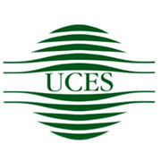
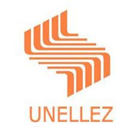

Estudiante de Programación
Ingeniero Agrícola



Soy ingeniero de profesión, estudio Programación en la UCES y Desarrollo Web en Acámica. Actualmente busco un trabajo relacionado a mis estudios. Me apasiona la programación y la tecnología en general.
Atención a pacientes.
Encargado de distinto procesos de construcción y mantenimiento vial. Jefe de personal obrero y operadores de maquinaria. Realización y modificación de presupuestos, solicitud y compra de materiales.
Modificación de planos, realización y actualización de presupuestos, cómputos métricos, cronogramas de trabajo, informes, entre otros.
Conocimientos en HTML, CSS, JavaScript, git, github.
Sobresaliente e interesado por el manejo y conservación de recursos naturales: riego y drenaje, cuencas hidrográficas, distribución y almacenamiento de agua, explotación de acuíferos, edafología, geotecnia, entre otros.